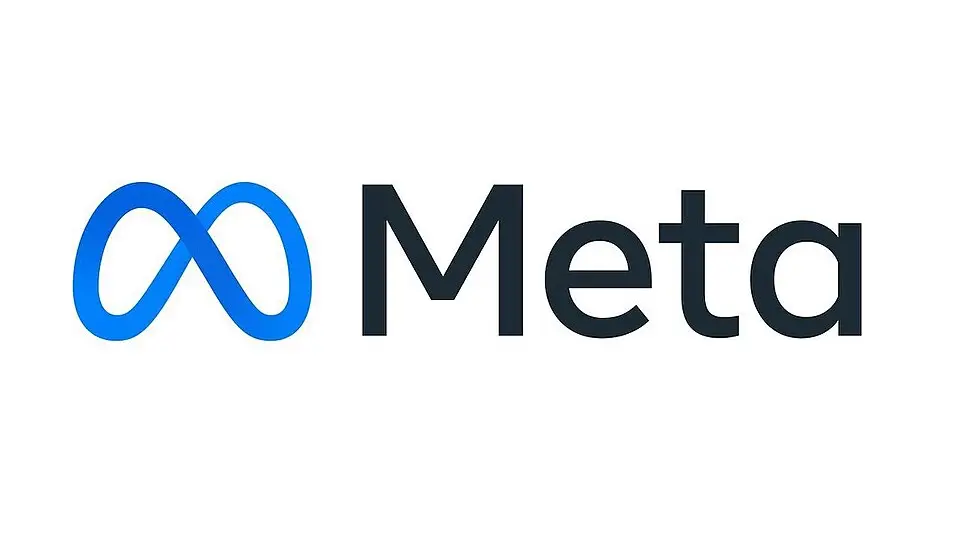

Meta launches Muse Wonder, its first true frontier models — and keeps the strongest one inside Muse Code
On Monday, Meta introduced the Muse Wonder series — Muse Wonder and Muse Wonder Full — calling them its most capable models to date and its first true bid for the AI frontier. The launch is the clearest signal yet that the company has finished rebuilding its AI organization and now intends to compete with OpenAI and Anthropic on their own terms: closed weights, premium pricing, and agents that do real work.
Fourteen months ago, Mark Zuckerberg overhauled Meta’s AI efforts and set up Meta Superintelligence Labs under former Scale AI CEO Alexandr Wang. In his own announcement on X on Monday, Zuckerberg called Wonder “a much larger and more advanced class of models” than the Muse Spark family that preceded it The model was developed under the internal codename Watermelon, a fact Wang confirmed in interviews after Zuckerberg teased the launch with a watermelon photo.
What Meta actually announced
The newsroom post pitches two proprietary models built for “personal and professional agentic tasks” — insurance claims, lease reviews, personal finances — with expert-domain strength in law, finance, and health, plus frontier-level coding. Two capabilities do the heavy lifting: Active Memory, which carries what matters across conversations, and Active Focus, which keeps the agent working toward a goal when a task gets hard — trying other approaches, recovering from errors, and checking in before following through on anything important.

On safety, Meta says the Wonder family is trained to avoid sharing private information without permission and to refuse requests to assist in “actually harmful acts,” with strengthened defenses against cyber attacks. The models were evaluated under the company’s Meta Superintelligence Scaling Framework, but the full safety report is still “available soon” — so the safety claims currently rest on Meta’s own account.
The numbers Meta doesn’t control
Independent benchmarking organization Artificial Analysis has already scored both models on its Intelligence Index, which combines ten evaluations across reasoning, knowledge, coding, and professional tasks. Muse Wonder Full earned 56 — tying Anthropic’s Claude Sonnet 5.5 and ahead of OpenAI’s GPT-6 Astra (53), Google’s Gemini 4 Argon (53), and Anthropic’s Claude Fable 5.1 (53). Only Anthropic’s flagship Claude Opus 5.5 scored higher, at 58. The standard Muse Wonder earned 52, one point behind GPT-6 Astra.
Meta’s own model card leans into specific agentic strengths: 57.5 on SWE-Marathon long-running coding (against 46.3 for Opus 5.5 and 42.5 for GPT-6 Astra), 13.1 on the Harvey LAB-AA legal benchmark (Opus 5.5: 4.2), 45.4 on AutomationBench business workflows, and 79.0 on DeepSWE. Worth reading with the usual caveat: Meta’s card mixes internally conducted evaluations, vendor-supplied scores, and third-party results, and some software-engineering comparisons use different coding tools for different models.
The catch: Wonder Full isn’t for sale à la carte
The bigger story may be commercial. Neither Wonder model ships with publicly downloadable weights — a clean break from the Llama era, when Meta’s open models let anyone self-host. Muse Wonder is available now through the Meta Model API at $4 per million input tokens and $20 per million output tokens (cached input $0.20), with a one-million-token context window. But Muse Wonder Full — the one matching Claude Sonnet 5.5 — has no API price at all. It’s reserved for paid Muse Code subscribers: $50 a month for the Power Usage tier, $200 a month for Maximum Usage. Meta says Wonder will also power the Muse app soon, rolling out to subscribers first.
One detail enterprises should catch early: Muse Code subscriptions default to Contributor mode, which permits Meta to use submitted prompts, code, files, and outputs to improve future models. The API’s Standard mode doesn’t. Subscribers can disable Contributor mode, but the change only applies to future submissions — and Meta’s terms explicitly prohibit submitting confidential or sensitive information.
What it signals
Meta is no longer the open-source champion undercutting everyone on price. It’s a direct frontier competitor selling closed models at premium rates — Wonder’s per-token price matches Claude Opus 5.5’s standard tier while undercutting GPT-6 Astra and Claude Fable 5.1 — backed by three billion users of distribution and a coding assistant to funnel the best model into. The open question isn’t whether Meta belongs in the frontier conversation now — the independent benchmarks say it does — but whether developers accept the split model: state-of-the-art access only on Meta’s terms, inside Meta’s tools.
Sources: Meta Newsroom — “Introducing Muse Wonder and Muse Wonder Full: Frontier Models for Agents”; VentureBeat; Tech Insider